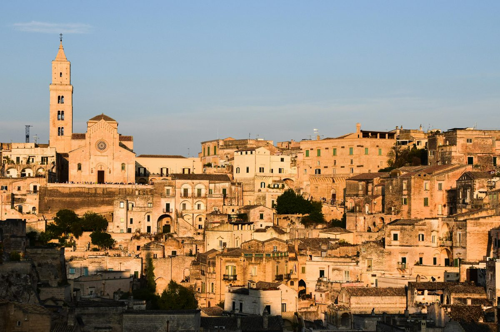

Day 8 — Matera with Gianluca
Thursday, May 28, 2026

PLACES & MAP LINKS — tap any place to open in Google Maps
🚗 Pickup — 9:00 AM — 📍 Borgobianco Resort (tour pickup)
Gianluca in modern minivan. Manual chair + Firefly returned, electric chair from local rental.
🍞 Stop — ~9:45 AM — 📍 Altamura (XV century bakery)
Ancient bakery tour + tasting of bread, calzone. Maddison will love this.
📸 Sight — Sassi tour — 📍 Matera — Sassi historic center
UNESCO World Heritage. Piazzetta Pascoli, Sasso Caveoso, Sasso Barisano.
🏛️ Entry included — 📍 Casa Grotta
Traditional cave dwelling, still furnished as before. Entry ticket included.
⛪ Entry included — 📍 Chiesa rupestre Santa Lucia alle Malve
Rupestrian church. Entry ticket included.
📸 Canyon viewpoint — 📍 Belvedere di Murgia Timone
Canyon view from the other side. The iconic Matera shot.
SIDE QUESTS
⚡ 📍 Walk deeper into the Sassi during the tour (Rob & Maddison only)
Gianluca will offer a section where Rob/Maddison can descend further into the lower Sassi. Parents stay with Gianluca at an accessible viewpoint. Guide-led, no logistics on you.
CONTACTS
ToursByLocals ref: Booking 1402515 — $1,028 USD
NOTES
- Light activity level — Gianluca skips Cathedral steps section for Dad.
- Casa Grotta + rupestrian church entry INCLUDED in tour price.
- Lunch in Matera at Gianluca-recommended spot — NOT included.
- Cathedral entry NOT included (extra €5-7/pp if you go inside).
- Bring cash: lunch ~€100-150, optional entries ~€20-30, tip ~€100-150.
- Return ~4 PM. Light dinner at Borgobianco that night.